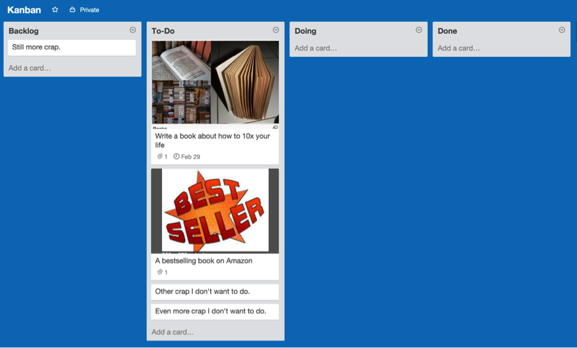
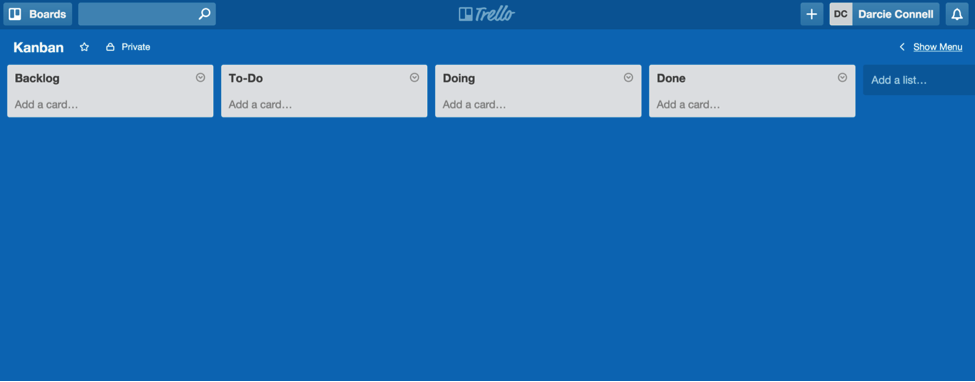
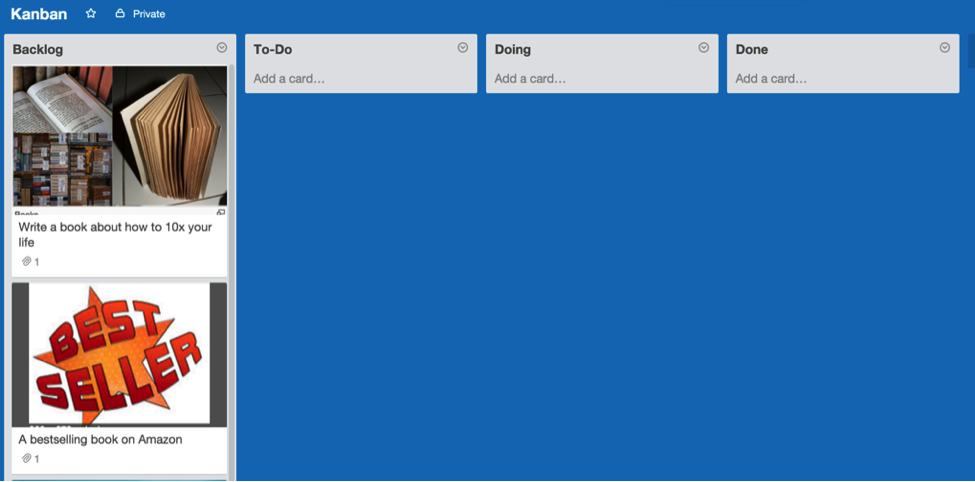
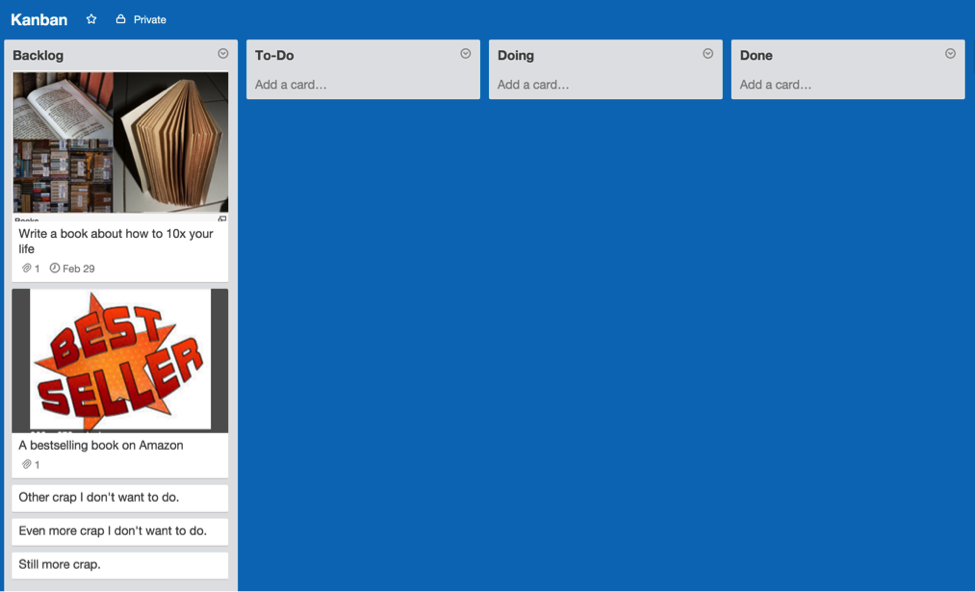
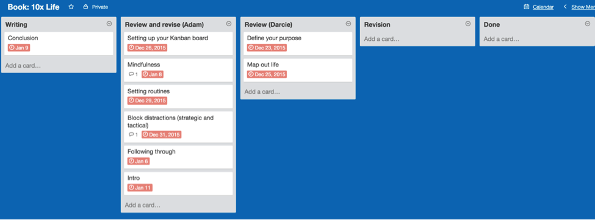

Chapter 3: Optimize your workflow

An easy, effective way to track your goals—and achieve them
In the previous chapter, you created your Board Game of Life. That board helped you define your purpose and map out your goals. But right now, your goals are just dreams, mere flotsam floating through your subconscious.
So how do you make your dreams a reality?
It’s simple: Organize your goals into a logical process that keeps you accountable. Without processes, dreams remain just that—dreams. Now, let’s work together and make your dreams happen.
Remember, you’ll only need to review your Board Game every six months to ensure your goals are still relevant. In this chapter, I’ll show you a board that you can use daily to set clearly-defined goals, effortlessly monitor your progress—and get more done than ever before.
You’ll also:
- get a simple step-by-step process to prioritize your workflow.
- understand the difference between capacity and flow—and why they’re key to achieving your goals.
- visualize your work and limit your work-in-progress (WIP).
- define SMART goals to set you up for success.
- discover why To-Do lists are slowing you down—and what to do instead.
And, as usual, you’ll get actionable, and proven methods to succeed—no crackpot, mood-ring, I-haven’t-bathed-in-weeks advice here.
Let’s optimize your workflow.
Enter the kanban.
Introducing kanban
Kanban (pronounced “Kahn-Bahn”) is Japanese for “a card you can see and touch.” Using a kanban system, you move cards through a board—similar to what we did in Trello in the previous chapter—to help you visualize your workflow through different stages.
Put in slightly more technical terms, kanban is an inventory control system. Developed by Taiichi Ohno, an industrial engineer at Toyota, kanban seeks to improve and maintain a high level of production.
Over time, kanban also became a popular framework for software development, who would use kanban to visualize their work. In fact, visualizing work is an uber-important part of kanban, which we’ll discuss in a moment.
But first, relax. We’re not building cars or software—we’re using the core concepts of kanban to build a better you. So sit back, smile, and enjoy the ride.
In their excellent book Personal Kanban, Jim Benson and Tonianne Barry highlight two rules, which are to:
- visualize work, and
- limit your work-in-progress (WIP).
Let’s look at both.
Visualize your work and limit your work-in-progress (WIP)
Kanban—or a kanban board—is a visual and kinesthetic representation of your work.
Kanban is superior to traditional To-Do lists because it:
- provides context.
- visually highlights trade-offs between choosing one item over another.
- lets you physically “move” items throughout your workflow (instead of just checking them off a To-Do list, never to be seen again).
Kanban is also excellent for identifying bottlenecks—so you can constantly improve your processes.
A simple kanban includes four columns:
- Backlog
- To-Do
- Doing
- Done
Let’s review each column.
Backlog: This is your brain dump. The goal is to empty your mind—a tactic David Allen uses in his book, Getting Things Done—and get every idea in your backlog. Don’t worry if your idea seems ridiculous; if you’re thinking about flinging custard at a duck, just add it your backlog—and empty your mind.
To-Do: This is stuff you’re going to do, just not right now. Cards in your To-Do column are items you’ve pulled from your backlog that you plan to complete in the near future; think of your backlog as your “maybe” pile, and your To-Do column as your “someday” pile.
Doing: These are items you’re currently working on. In Kanban terms, this is referred to as your work-in-progress (WIP). It’s good to limit your WIP; I suggest starting with 2–3 items. So, if you move another item into your “Doing” column (and exceed your limit of three), move one of the existing items back to the “To-Do” column. This is subtle, but powerful: limiting your WIP forces you to see what you’re working on, what you’re not, and the tradeoffs of doing so. Done: These are items you’ve completed. (Duh.)
Here’s what the Kanban looks like:

We’ll use Trello for this example. (As I mentioned in the last chapter, you can also use Post-It notes, though I suggest Trello because it’s free, easy, and portable. Get the Trello screenshots and templates on the Resources page.
To create this new board:
- Open Trello. (And create a free account if you haven’t already.)
- Click “Boards” in the top left of the page.
- Click “Create New Board.”
- For the title, name it Kanban.
Nice. Your kanban will change your life. It is, without a doubt, the single biggest factor in achieving your dreams. I’ll explain how in a minute. But first, you need to understand...
Capacity vs. flow: the striking difference in approaches (and why one causes you stress)
- Capacity is how much work you can do;
- Flow is how fast work moves through your Kanban (the flow from one column to another is also called your “value-stream”)
Have you ever heard someone say “Our team is working at full capacity?”
That phrase makes me cringe. As a consultant, I’ve heard it hundreds of times from different teams—and, without fail, it means they’re unproductive.
Why? Because they’re mistakenly focused on capacity, not flow.
- Focus on capacity = fail.
- Focus on flow = win.
In the book Personal Kanban, authors Benson and Barry use a freeway to explain the difference between optimizing for capacity vs. flow.
Picture an empty freeway. You’d say the freeway is at 0% capacity. If you optimize for capacity, your goal will be to reach 100% capacity—which ends up in a bumper-to-bumper traffic jam.
Now, let’s optimize for flow. Instead of pushing for 100% capacity—which brings traffic to a standstill—we limit capacity to only 65%. At 65% capacity, traffic flows along nicely, and everyone’s happy.
Applied to your work: if you’re at 100% capacity, your work won’t flow. You’ll feel overburdened, stressed out, and—as a result—you won’t get the important stuff done. Your work becomes a traffic jam.
Quick story: I worked in restaurants for years. I’ve been a cook, dishwasher, busboy, and waiter.
As a waiter, I always wanted more tables, because (in the U.S. at least) more tables meant more tips.
So I’d badger the hostess for more tables. The conversation went something like this:
- Me: “Give me more tables!”
- Hostess: “But you already have six.”
- Me: “I don’t care. Give me more money! I mean, more tables!”
- Hostess: “OK, dumbass.”
Pretty soon, I’d have more tables than Vishnu could handle, sweat running down my brow, customers clamoring for “more soup!” and “more wine!” and “check, please!”
Naturally, service suffered. And so did my tips.
In this example, I optimized for capacity, not flow. And as a result, I worked really, really hard—for less money.
Let that sink in. Every time you feel overwhelmed, you’re probably “working at full capacity”—and getting nothing done.
But working at low capacity isn’t effective, either. In restaurants, most mistakes happen on slow nights because no one gets into the rhythm of work. Seriously. Ask any waiter how hard it is to wait on just one table—it’s agonizing. Rather than hovering over your guests like a vulture, you shoot the breeze with the cooks… and… suddenly… you’ve forgotten about the table.
Kanban ensures you optimize for flow, not capacity. Why? Because in your kanban, you limit how many cards you can have in your “Doing” column—also called your work-in-progress (WIP)—at one time; this limits your capacity, which in turn optimizes your flow.
Remember the freeway example? In that example, we saw that traffic flows best at 65% capacity. Any higher, and you’ve got a traffic jam. So, to optimize for flow you need to limit your capacity—and that’s why limiting your WIP is so powerful.
For example, let’s say you intentionally limit your WIP to three. This means you never have more than three tasks in your “Doing” column at once. You need to finish one of those tasks—and move it to your “Done” column—before moving another task into the “Doing” column.
Sure, you could take five—or even ten—projects at once, but you don’t want to create a traffic jam. By limiting your WIP to three, however, you’re optimizing for flow—and getting more done.
Kanban makes this dead-simple. It forces you to finish one task in your “Doing” column—or move it back to your “To-Do” column, to be completed later—before moving on to the next. So instead of just “getting things done” you’re getting the right stuff done, at the right time.
Big difference.
We’ll build your kanban, from soup to nuts, in a moment. (And in case you’re wondering, the phrase “from soup to nuts” means “beginning to end.” It’s derived from a traditional mid-20th-century American meal, which started with soup and ended with nuts. Interesting, huh?)
To recap: your kanban is a board with a series of cards. Each card represents a task (or goal). In your kanban, your “Doing” column—also called your work-in-progress (WIP)—should have a maximum number of cards. By limiting your WIP, you optimize for flow, not capacity, which reduces stress, increases effectiveness, and makes you feel warm and fuzzy inside.
For your work to flow, clearly define each goal (i.e. card). If your goal is vague—which happens often—you’ll never know when it’s done; the card will languish there, in your “Doing” column, until the cows come home, fall asleep standing up, and blast your carpet with methane-coated fudge nuggets.
But before we flesh out your kanban, you’ll need to...
Set SMART goals
To define your goals—and keep you accountable—we're going to use the SMART goals framework.
SMART stands for:
- Specific
- Measurable
- Attainable
- Realistic
- Timely
Let's look at each one more closely. Your goals should be:
- Specific. (“Visit Spain and Portugal.” vs. “Travel more.”)
- Measurable. (“Run a 50k.” vs. “Run farther.”)
- Attainable. (“Dive the Great Barrier Reef.” vs. “Go to Pluto.”)
- Realistic. (“Increase bench press by 100 pounds this year.” vs. “Increase bench press by 100 pounds by tomorrow.”)
- Timely. (“Visit Spain and Portugal by June of next year.” vs. “Visit Spain and Portugal.”)
Here’s an example of a SMART goal:
By the end of next year, I want to run a 50-mile race in the San Francisco Bay Area.
You'll see that it is specific (50-mile race), measurable (50 miles), attainable (lots of people have run 50 miles), realistic (I’ve run a 50K before), and timely (by the end of next year).
In case you’re wondering about the difference between “attainable” and “realistic,” I view them this way: attainable goals are what you could achieve; realistic goals are if you really want to. For example, I’m six-foot-four. Therefore, to become a jockey is neither attainable nor realistic. On the other hand, to become a doctor is attainable, but since I don’t want to go to medical school, it’s not realistic.
SMART goals help you focus; they provide clarity about your purpose and ensure you know what you want to do—and by when.
Next up, we’ll integrate the SMART Goals framework into the goals you created in your Board Game of Life. Let's look at that now.
Integrate your Board Game of Life into your kanban
Over the next few pages, we’re going to move your top goals from your Board Game of Life into your kanban.
As you recall, your Board Game of Life contains your big dreams and life goals. And your kanban is laser-focused on helping you get the right things done at the right time. Since we’ll be using Trello for both, they may seem similar. But they’re very, very different.
Here’s how they compare:
| Board Game of Life | Kanban |
|---|---|
| Created in Trello or Post-It notes | Created in Trello or Post-It notes |
| Updated every six months (or whenever your big goals change) | Updated daily |
| Big picture | Detail oriented |
| Dreaming | Doing |
| Inspiration (because you see your goals) | Motivation (because you see progress) |
Here’s what we’re gonna do:
- Move the top cards from your Board Game of Life to your new kanban.
- Rewrite each card so it is a SMART goal.
- Add a deadline for each goal.
- Pin your kanban to a New Tab in Chrome (optional).
OK, first step: move the cards from your Board Game of Life into your new kanban board.
This is a snap in Trello.
For each card in the “Top priorities in my life” list:
- Click the card.
- Under “Action” click “Move.”
- Select the “Kanban” board and the “Backlog” column.
- Repeat for each card in your “Top priorities in my life” list.
This should only take you a minute or two. (Get a walk-through that explains how to move cards in Trello here: www.10xtoday.com/life-resources.)
Remember, move only your highest priority cards—the first column in your Board Game of Life—into your kanban. That's because life gets in the way: Work, social obligations, emergencies, and God knows what else. Therefore, it's best to leave room for these things when they happen. Remember, we're optimizing for flow, not capacity—so don’t overload yourself.
Alright, your kanban should look something like this:

Nice work. Now, for each card in Trello, rewrite your goal so that it is specific, measurable, attainable, realistic, and timely. For the “timely” bit, set a due date within Trello.
To add a due date:
- Click the card,
- Click “Due Date,”
- Select your date, and
- Click “Save.”
And there you have it: your biggest goals, hopes, dreams, and desires—each with clearly defined deadlines—all in a single, easy-to-use system that gives you clarity, flexibility, and a calming sense of control.
Now I don’t know about you, but I’m happy-dancing and fist-pumping like a mofo. Because now you’ve got a working system in place to help you achieve everything you want in life.
But life gets in the way. So let’s talk about...
All that other crap you “need” to do? Put it in your kanban
You know the saying, “the devil is in the details”? It's half-true. Because angels live in details, too. And both angels and devils play tug-of-war inside your brain, pulling you toward your purpose, then away, then back again, over and over—until you’re nothing but a frantic scrapheap of indecision.
Up until now, you’ve only added angels to your kanban. That’s the stuff you want to do.
But there’s a lot of other stuff in your head—usually random thoughts, or stuff you don’t want to do—and you’ve got to get rid of those devils.
Here's how to do it:
Step 1. Brain dump everything from your mind into your backlog. Pour all the thoughts and information bouncing around in your head—most of which is distraction—into your backlog. Once you’ve written it down, it’s out of your head, and you'll enjoy clarity and focus.
Your kanban should now look like this:

Quick note: see how the cards from my Board Game of Life have pictures, while the “crap I don’t want to do” cards don’t? Don’t spend time visualizing stuff you don’t want to do; put the cards in your backlog as text-only and get on with your day.
Step 2. Prioritize items in your backlog, and move important items to your “To-Do” column. For each card, ask yourself, “Will this help me achieve my big goals? Is it important and meaningful? Or distracting and meaningless?” Then move each meaningful card to your “To-Do” column.
Here’s your updated kanban:

Quick note: there are likely several items in your backlog you need to do—but don't want to. That sucks, I know, but it’s okay. Move those devils into the “To-Do” column.
Step 3. Move your 2–3 most important items into your “Doing” column. Remember, your “Doing” column is for stuff you’ll work on today—and maybe the near future if it’s a large task. For example, “write a book” ain't gonna happen in a day; but since it's my top goal, it remains in my “Doing” column. This provides a visual reminder that, for me, writing a book is an important goal—and that I should work on it every day.
But here’s the rub: a big goal like “write a book” or “run a 50-mile race” or “travel across Africa” includes dozens, if not hundreds, of smaller steps to achieve, right? That's why you will need to set up an additional board for each larger project.
Which may lead you to ask...
“Adam, WTF? How many kanbans do I need?”
As you can see, we've created one master kanban board, which you use every day. However, some cards—especially large projects like “write a book” or “run a marathon”—may require their own board.
Here’s my advice:
Create a temporary, standalone board for larger projects. It helps you focus on the big picture and quickly set up tasks to complete the project. Don't be afraid to create multiple kanbans.
Keep in mind: each of these project-specific kanbans will go away once you finish the project, whereas your main board will continue to grow and change over time.
For example, here's what my kanban looks like for this course:

In the above example, notice how I've broken it down into individual chapters, added due dates for each, and created new columns specific to the book-writing process.
Those columns are:
- Backlog,
- Writing,
- Review and revise (Adam),
- Review (Darcie; that’s my wife),
- Revision, and
- Done.
See how the kanban helps me visualize my work?
At a glance, I can see each chapter I’m working on, what stage it’s at, and the deadlines for each. Visualizing your work—and more importantly, your progress—is like crack for productivity; you get instant feedback on where you are, and where you’re headed.
For your own projects, set up the columns however you wish; in my example, the columns made the most sense to me for publishing a book—but your kanban may look very different. That’s cool.
Quick recap
Let’s tie this all together. I have my master kanban, which looks like this:
And in the “Doing” column I have “write a book about how to 10x your life.” Since that’s a big goal that contains several smaller goals, I’ve created a separate kanban for the book, which looks like this:

The “book kanban” will disappear when I finish the book. Since you’re reading this book now, you can safely assume this kanban has been terminated.
The master kanban, however, will only continue to grow as more items are added into the backlog.
Speaking of large projects, here’s...
A quick and easy way to break down large projects—by using backward design
I know, backward design is a crappy name. (I didn’t name it. It sounds like something developed in the backwaters of Swampbutt, USA.) But it’s dead useful.
Backward design helps you answer the dreaded “Where do I start?” question. To do this, simply begin with the goal in mind, then work your way backward from that.
For example, my goal was to publish a book, right? But if I started from the beginning, well… I wouldn’t know where to start. There are way too many steps between my goal—and what I need to do to get there.
So I started with “publish a book,” then added steps backward from that, including:
- format the text for Kindle,
- send the finished copy to an editor,
- design a cover,
- hire someone to design a cover,
- finish the final copy,
- make final edits based on feedback,
- review feedback from others,
- ask for feedback from others,
- finish the third revision,
- finish the second revision,
- write the first revision,
- write the rough draft,
- create outline,
- determine my target audience, and
- research the market.
See how that works? By starting with the end in mind, it’s easy to work backward, getting increasingly tactical until we finally have our full plan laid out for us in a clear, easy-to-understand format.
Noah Kagan swears by backward design. He built AppSumo, a Groupon-like site for entrepreneurs, to 500,000 subscribers in only 18 months by reverse-engineering what worked—and scrapping whatever didn’t. (If you’re interested, here’s an interesting—and irreverent—interview with Noah on Scott Britton’s Life-LongLearner.com about reverse-engineering.)
Kanban’s great—but here’s the catch
Kanban will change your life—if you use it. And the easiest way to use your kanban is: keep it in front of you.
For example, set your kanban as your homepage. (Or post it on your wall if you’re using Post-It notes.)
Leave that tab open, always, and review it throughout the day.
Pro tip: You can also set your kanban to be your new tab in Chrome.
Here's how to do that:
- Install the New Tab Redirect Chrome extension.
- Type chrome://extensions/ into your browser bar (where you type in URLs).
- Scroll down to the “New Tab Redirect” and click “Options.”
- Enter the URL of your kanban board.
Now every time that you open a new tab in your browser, your kanban will be the first thing you see!
By now, I’m sure you can see the power of using a kanban; the flexibility lets you course-correct whatever spitballs life throws at you. In the next chapter, you’ll discover how to put your kanban to work, so it runs almost on autopilot.
Summary
In this chapter, you created your kanban from the top cards in your Board Game of Life. In doing so, you’re now able to focus on the biggest goals in your life on a day-to-day basis, and ensure you're continually improving and working toward your goals.
You also discovered the difference between capacity and flow—and why you should always optimize for flow. Optimizing for flow keeps you clear-headed and ensures you accomplish what matters.
You also learned how to set SMART goals, which are specific, measurable, attainable, realistic, and timely.
You learned to “empty your mind” into your kanban by putting every thought, task, and action floating through your brain directly into your kanban board. The benefits are enormous: you'll experience a sense of clarity and focus.
You also learned how to set up your personal kanban so it displays automatically whenever you open a new tab in your browser. This reminds you several times each day what you should focus on, which is a proven psychological method to help you achieve your goals.
What you need to do next
- Create a new board and call it “Kanban.”
- Open your Board Game of Life in Trello.
- Copy the cards in the first column of your Board Game of Life and move them into your “Kanban” board. Put these cards in “To-Do” column.
- Ensure each card is a SMART goal; that is specific, measurable, attainable, realistic, and timely.
- To make the card timely, use Trello’s “Due Date” feature to add a specific date.
- Empty your mind by putting EVERYTHING in your head into the backlog column of your kanban. (Go crazy here; the backlog will only get longer with time, and that’s a good thing—if you weren’t writing it down, all that stuff would still be in your head.)
- Move cards that are important and necessary into your “To-Do” column.
- Optional: If you have daily tasks and don’t feel like adding them to your kanban every day, create automatic recurring cards using Zapier. This article explains how.